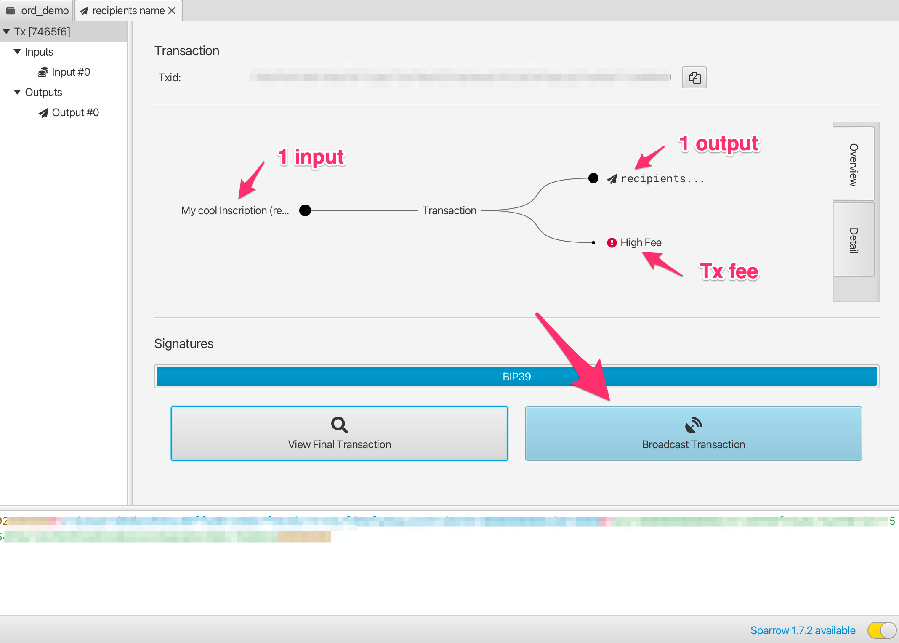
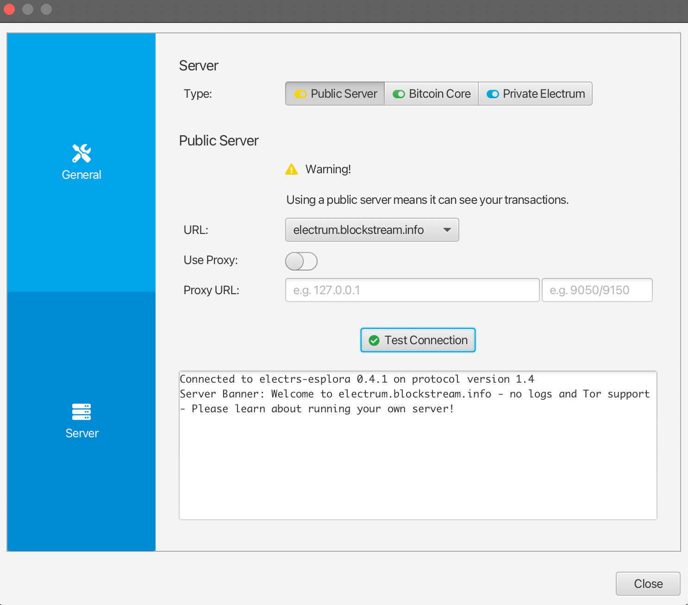

紹介
This handbook is a guide to ordinal theory. Ordinal theory concerns itself with gros, giving them individual identities and allowing them to be tracked, transferred, and imbued with meaning.
Gros, not groestlcoin, are the atomic, native currency of the Groestlcoin network. One groestlcoin can be sub-divided into 100,000,000 gros, but no further.
序数理論はビットコインブロックチェーン以外のサイドチェーンまたはトークンが必要ではなく、ビットコインインターネットに何も変更しない場合にも使うことができます。すぐに使うことができます。
Ordinal theory imbues gros with numismatic value, allowing them to be collected and traded as curios.
Individual gros can be inscribed with arbitrary content, creating unique Groestlcoin-native digital artifacts that can be held in Groestlcoin wallets and transferred using Groestlcoin transactions. Inscriptions are as durable, immutable, secure, and decentralized as Groestlcoin itself.
他の非正規の応用でも可能となり、チェーンの下の染色コインはシークレットキー交替の公開キーのインフラがあります。DNSの分散化の代替品などです。 今のところこういう応用は推測的で、非主流の序数の理論家の頭だけに存在しています
序数理論のより多くの詳細な情報について， 概述を閲見してください。
銘文のより多くの詳細な情報について、 銘文を閲見してください。
準備ができて、自分でする時に、銘文は良いなスタートです。銘文序数理論で支持した独特な数字文物です。
リンク
序数理論の概要
Ordinals are a numbering scheme for gros that allows tracking and transferring individual gros. These numbers are called ordinal numbers. Gros are numbered in the order in which they're mined, and transferred from transaction inputs to transaction outputs first-in-first-out. Both the numbering scheme and the transfer scheme rely on order, the numbering scheme on the order in which gros are mined, and the transfer scheme on the order of transaction inputs and outputs. Thus the name, ordinals.
Technical details are available in the BIP.
序数理論は独特なトークン、独特なブロックチェーン、またはビットコインにどんな変更でも必要ではなくて、すぐに有効的に運行することができません。
シリアル番号はいくつか異なる表示方式があります
-
Integer notation:
2099994106992659The ordinal number, assigned according to the order in which the gro was mined. -
Decimal notation:
3891094.16797The first number is the block height in which the gro was mined, the second the offset of the gro within the block. -
Degree notation:
3°111094′214″16797‴. We'll get to that in a moment. -
Percentile notation:
99.99971949060254%. The gro's position in Groestlcoin's supply, expressed as a percentage. -
Name:
satoshi. An encoding of the ordinal number using the charactersathroughz.
Arbitrary assets, such as NFTs, security tokens, accounts, or stablecoins can be attached to gros using ordinal numbers as stable identifiers.
Ordinals is an open-source project, developed on GitHub. The project consists of a BIP describing the ordinal scheme, an index that communicates with a Groestlcoin Core node to track the location of all gros, a wallet that allows making ordinal-aware transactions, a block explorer for interactive exploration of the blockchain, functionality for inscribing gros with digital artifacts, and this manual.
希少度
Humans are collectors, and since gros can now be tracked and transferred, people will naturally want to collect them. Ordinal theorists can decide for themselves which gros are rare and desirable, but there are some hints…
ビットコインは周期的な事件があり、頻繫的なのはあるし、一般的なのはあります。これらの事件は自然にレア度システムが形成されます。この周期的な事件は:
-
Blocks: A new block is mined approximately every 1 minute, from now until the end of time.
-
Difficulty adjustments: Every 2016 blocks, or approximately every 1.5 days, the Groestlcoin network responds to changes in hashrate by adjusting the difficulty target which blocks must meet in order to be accepted.
-
Halvings: Every 1,050,000 blocks.
-
Cycles: Every 6 * 1,050,000 blocks.
以下の希少度のレベルを与えられました:
common: Any gro that is not the first gro of its blockuncommon: The first gro of each blockrare: The first gro of each difficulty adjustment periodepic: The first gro of each halving epochlegendary: The first gro of each cyclemythic: The first gro of the genesis block
Which brings us to degree notation, which unambiguously represents an ordinal number in a way that makes the rarity of a gro easy to see at a glance:
A°B′C″D‴
│ │ │ ╰─ Index of gro in the block
│ │ ╰─── Index of block in difficulty adjustment period
│ ╰───── Index of block in halving epoch
╰─────── Cycle, numbered starting from 0
序理論家通常使用 "時間","分"、"秒"、そして"3" などの対応を専用の言叶は、a、b、c、と_d。
Now for some examples. This gro is common:
1°1′1″1‴
│ │ │ ╰─ Not first gro in block
│ │ ╰─── Not first block in difficulty adjustment period
│ ╰───── Not first block in halving epoch
╰─────── Second cycle
This gro is uncommon:
1°1′1″0‴
│ │ │ ╰─ First gro in block
│ │ ╰─── Not first block in difficulty adjustment period
│ ╰───── Not first block in halving epoch
╰─────── Second cycle
This gro is rare:
1°1′0″0‴
│ │ │ ╰─ First gro in block
│ │ ╰─── First block in difficulty adjustment period
│ ╰───── Not the first block in halving epoch
╰─────── Second cycle
This gro is epic:
1°0′1″0‴
│ │ │ ╰─ First gro in block
│ │ ╰─── Not first block in difficulty adjustment period
│ ╰───── First block in halving epoch
╰─────── Second cycle
This gro is legendary:
1°0′0″0‴
│ │ │ ╰─ First gro in block
│ │ ╰─── First block in difficulty adjustment period
│ ╰───── First block in halving epoch
╰─────── Second cycle
And this gro is mythic:
0°0′0″0‴
│ │ │ ╰─ First gro in block
│ │ ╰─── First block in difficulty adjustment period
│ ╰───── First block in halving epoch
╰─────── First cycle
If the block offset is zero, it may be omitted. This is the uncommon gro from above:
1°1′1″
│ │ ╰─ Not first block in difficulty adjustment period
│ ╰─── Not first block in halving epoch
╰───── Second cycle
Rare Gro Supply
総供給量
common: 10.4 quadrillion普通ではない: 6,929,999珍しく: 3437史詩: 32伝奇: 5神話: 1
現有の供給量
common: 8.3 quadrillion普通ではない: 745,855珍しく: 369史詩: 3伝奇: 0神話: 1
At the moment, even uncommon gros are quite rare. As of this writing, 745,855 uncommon gros have been mined - one per 25.6 groestlcoin in circulation.
名前
Each gro has a name, consisting of the letters A through Z, that get shorter the further into the future the gro was mined. They could start short and get longer, but then all the good, short names would be trapped in the unspendable genesis block.
As an example, 1905530482684727°'s name is "iaiufjszmoba". The name of the last gro to be mined is "a". Every combination of 10 characters or less is out there, or will be out there, someday.
きけいです。
Gros may be prized for reasons other than their name or rarity. This might be due to a quality of the number itself, like having an integer square or cube root. Or it might be due to a connection to a historical event, such as gros from block 1,439,424, the block in which SegWit activated, or 10499999999999999°, the last gro that will ever be mined.
Such gros are termed "exotic". Which gros are exotic and what makes them so is subjective. Ordinal theorists are encouraged to seek out exotics based on criteria of their own devising.
銘文
Gros can be inscribed with arbitrary content, creating Groestlcoin-native digital artifacts. Inscribing is done by sending the gro to be inscribed in a transaction that reveals the inscription content on-chain. This content is then inextricably linked to that gro, turning it into an immutable digital artifact that can be tracked, transferred, hoarded, bought, sold, lost, and rediscovered.
考古
Whether or not ordinals are of interest to NFT archaeologists is an open question! Ordinals were in fact created by Gruve-P in 2014 when he mined the Groestlcoin genesis block. In this sense, ordinals, and especially early ordinals, are certainly of historical interest.
数字文物
実体のある人工物を想像してください。例えば、珍しいコインの場合、バイキングの宝庫の闇の中で何年も秘密に保管されています今、あなたの手で地下から掘り出されました。それ…
……一人の主人がいます。それはあなたです。あなたが大切に保管していれば、誰もあなたからそれを奪うことはできません。
…完全です。漏れている部分はありません。
…あなたしか変えることができません。もしあなたがビジネスマンで、あなたが来たならの18世紀の中国では、あなた以外に印鑑を押す人はいません。
……あなたしか処分するすることができません。販売、取引、または贈り物はあなたの決定であり、誰にあげたいかは誰にでもあげます。
デジタル文化財（デジタル工作物、デジタル人工物）とは？は簡単に言えば、物理的人工物のデジタル等価物であります。
デジタル化されたものをデジタルアーティファクトにするには、あなたのコインのようでなければなりません。
-
デジタル文化財には所有者がいることができるので、デジタル文化財とは異なります。誰も数字を持つことができないからです。
-
デジタル文化財は完全であり、IP FSまたはArweave上のチェーンの下のコンテンツを指すNFTは不完全であるため、デジタル文化財ではありません。
-
デジタル文化財は許可が必要なく、印税を支払わなければ販売できないNFTは許可が必要ないわけではないので、デジタル文化財ではありません。
-
デジタル文化財は審査不可能です。今日は集中元帳のデータベースエントリを変更できるかもしれませんが、明日はできないかもしれません。そのため、デジタル文化財ではありません。
-
デジタルコンテンツは改ざんできません。アップグレードキーを持つNFTはデジタルコンテンツではありません。
デジタル文化財の定義は、その特定の性質からNFTを反映することを目的としています_べき_は何か、時には何か、そして銘文_終始_は何ですか
銘文
Inscriptions inscribe gros with arbitrary content, creating groestlcoin-native digital artifacts, more commonly known as NFTs. Inscriptions do not require a sidechain or separate token.
These inscribed gros can then be transferred using groestlcoin transactions, sent to groestlcoin addresses, and held in groestlcoin UTXOs. These transactions, addresses, and UTXOs are normal groestlcoin transactions, addresses, and UTXOS in all respects, with the exception that in order to send individual gros, transactions must control the order and value of inputs and outputs according to ordinal theory.
銘文の内容はワールドワイドウェブ基準に基づいている。銘文はコンテンツタイプ（MI MEタイプとも呼ばれる）とコンテンツ自体（バイト列）で構成されています。これにより、Webサーバーから銘文コンテンツを返すことができ、HTML銘文を作成して使用し、他の銘文コンテンツを再混合するために使用されます。
銘文の内容は完全にチェーン上にあり、保存されているtaproot script-path spendスクリプト内。のTaprootスクリプトはその内容に対する制限が少なく、証人割引を追加で受けることで、銘文内容の保存が比較的経済的になります。
taproot script-path spendスクリプトは既存のtaproot出力からしか生成できないため、そのため、は2段階のcommit/revealプロセスを使用して刻印されます。まず、commitでは、銘文の内容を含むスクリプトに提出するtaproot出力を作成します。次に、reveal取引では、commit取引による出力を使用して、チェーン上の銘文の内容を表示します。
銘文の内容は、実行されていない条件のデータプッシュを使用してシリアル化され "エンベロープ"と呼ばれます。封筒はOP_FALSE OP_IF…OP_ENDIF任意の数のデータプッシュを構成し、ラップします。エンベロープは実際には空の操作なので、それらを含むスクリプトのセマンティクスは変更されません。となり、他のロックスクリプトと組み合わせて使用できます。
文字列「Hello,world！」を含むのテキスト銘文を以下のようにシリアル化されています：
OP_FALSE
OP_IF
OP_PUSH "ord"
OP_PUSH 1
OP_PUSH "text/plain;charset=utf-8"
OP_PUSH 0
OP_PUSH "Hello, world!"
OP_ENDIF
まず文字列'ord'がプッシュされ、銘文と封筒の他の用途との曖昧さを解消します。
`OP_PUSH 1'は、次のプッシュにコンテンツタイプが含まれていることを示します。'OP_PUSH 0'は、後続のデータプッシュがコンテンツ自体を含むことを示す。の大規模な銘文は複数回のデータプッシュを使用しなければならない。taprootの少数の制限の一つは、単一のデータプッシュが520バイトを超えないことであります。
The inscription content is contained within the input of a reveal transaction, and the inscription is made on the first gro of its input. This gro can then be tracked using the familiar rules of ordinal theory, allowing it to be transferred, bought, sold, lost to fees, and recovered.
内容
銘文のデータモデルはHTTP応答のデータモデルであり、銘文がウェブサーバによってサービスされ、ウェブブラウザで閲覧することを可能にします。
フィールド
銘文には、オプションの本文の前にフィールドを含めることができます。各フィールドにはの2つのデータプッシュ、1つのラベルと1つの値。
現在、定義されている唯一のフィールドは『content-type』です。タグは「1」、その値は本文のMI MEタイプです。
本文の先頭とフィールドの末尾には "空のデータ"でプッシュが表示されます。
認識できないラベルの解釈は、偶数か奇数かによって異なり、稲妻ネットワーク"は奇数"にすることができるというルールに従います。
ラベルさえも、作成、初期割り当て、または銘文の転送に影響を及ぼす可能性のあるフィールドのために使用されます。だから、識別できない銘文でも、フィールドも"未バインド"として表示されなければなりません。つまり、場所がありません。
奇数タグは、追加のメタデータなど、作成、初期フィールド、割り当て、または転送に影響を与えないために使用され、したがって、無視することが安全であることを選択します。
銘文の身分ID
銘文は取引を明らかにする入力に含まれている。彼らを一意に識別するために、彼らには以下の形式のIDが割り当てられています：
521f8eccffa4c41a3a7728dd012ea5a4a02feed81f41159231251ecf1e5c79dai0
’i’の先頭部分は、トランザクションID（’txid’）である。iの後の数字はを定義します。新しい銘文は、取引で常に銘記されたインデックスの位置(0から開始)
銘文は、入力の中の異なる入力の中にあってもよく、同じ入力であってもよく、あるいは両者の組み合わせであってもよい。いずれにしても、パーサーは入力を連続的にチェックし、すべての銘文『封筒を検索するため、順序は明確です
| Input | Inscription Count | Indices |
|---|---|---|
| 0 | 2 | i0, i1 |
| 1 | 1 | i2 |
| 2 | 3 | i3, i4, i5 |
| 3 | 0 | |
| 4 | 1 | i6 |
サンドボックス化
HTML と SVG 銘文はサンドボックス化され、チェーンの下の内容を引用しないようにして、銘文の不変性と独立性を保ちます。
これは、HTMLとSVGの銘文を iframes にロードし、銘文コンテンツを提供することによって行われる'sandbox'属性です。Content-Security-Policy”ヘッダ。
Metadata
Inscriptions may include CBOR metadata, stored as data pushes in fields with tag 5. Since data pushes are limited to 520 bytes, metadata longer than 520 bytes must be split into multiple tag 5 fields, which will then be concatenated before decoding.
Metadata is human readable, and all metadata will be displayed to the user with its inscription. Inscribers are encouraged to consider how metadata will be displayed, and make metadata concise and attractive.
Metadata is rendered to HTML for display as follows:
null,true,false, numbers, floats, and strings are rendered as plain text.- Byte strings are rendered as uppercase hexadecimal.
- Arrays are rendered as
<ul>tags, with every element wrapped in<li>tags. - Maps are rendered as
<dl>tags, with every key wrapped in<dt>tags, and every value wrapped in<dd>tags. - Tags are rendered as the tag , enclosed in a
<sup>tag, followed by the value.
CBOR is a complex spec with many different data types, and multiple ways of representing the same data. Exotic data types, such as tags, floats, and bignums, and encoding such as indefinite values, may fail to display correctly or at all. Contributions to ord to remedy this are welcome.
例を挙げます
Since CBOR is not human readable, in these examples it is represented as JSON. Keep in mind that this is only for these examples, and JSON metadata will not be displayed correctly.
The metadata {"foo":"bar","baz":[null,true,false,0]} would be included in an inscription as:
OP_FALSE
OP_IF
...
OP_PUSH 0x05 OP_PUSH '{"foo":"bar","baz":[null,true,false,0]}'
...
OP_ENDIF
And rendered as:
<dl>
...
<dt>metadata</dt>
<dd>
<dl>
<dt>foo</dt>
<dd>bar</dd>
<dt>baz</dt>
<dd>
<ul>
<li>null</li>
<li>true</li>
<li>false</li>
<li>0</li>
</ul>
</dd>
</dl>
</dd>
...
</dl>
Metadata longer than 520 bytes must be split into multiple fields:
OP_FALSE
OP_IF
...
OP_PUSH 0x05 OP_PUSH '{"very":"long","metadata":'
OP_PUSH 0x05 OP_PUSH '"is","finally":"done"}'
...
OP_ENDIF
Which would then be concatinated into {"very":"long","metadata":"is","finally":"done"}.
出所
銘文の所有者は子銘文を作り上げられ、チェーンの上で自由にこれらの子銘文の'遡源'を作り上げ、父の銘文の所有者から作り上げたことを証明します。集合に用いられて、父の銘文の子銘文は同じ集合のメンバーとなります。
子銘文も自分の子銘文を作成することができ、様々な階層構造が形成ます。例えば、ある芸術家は自分を代表する銘文を作成して、子銘文は彼らが作成したコレクションを代表し、この銘文のそれぞれのサブプロジェクトはコレクションの中のプロジェクトです。
規範
父の銘文Pのために子銘文Cを作り上げます。
- 通常通りCに常用の刻銘取引Tを作り上げます。
- 铭文P一つの入力中のTに父の銘文Pを加えます
Cの中にはラベル'３'が含まれ、OP_PUSH 3ということです。数値はPのシリーズ化のバイナリー銘文IDのシリーズ化は32バイトのTXIDです。後は4バイトのスモールエンドのINDEX`で、最後の0が含まれません
NB The bytes of a groestlcoin transaction ID are reversed in their text representation, so the serialized transaction ID will be in the opposite order.
例を挙げます
子銘文の例 000102030405060708090a0b0c0d0e0f101112131415161718191a1b1c1d1e1fi0:
OP_FALSE
OP_IF
OP_PUSH "ord"
OP_PUSH 1
OP_PUSH "text/plain;charset=utf-8"
OP_PUSH 3
OP_PUSH 0x1f1e1d1c1b1a191817161514131211100f0e0d0c0b0a09080706050403020100
OP_PUSH 0
OP_PUSH "Hello, world!"
OP_ENDIF
ラベル3の数値は2進数で、16進数ではなく、主に子銘文を識別されます。000102030405060708090a0b0c0d0e0f101112131415161718191a1b1c1d1e1fi0ひとつの銘文取引の入力とする必要があります。
銘文IDのコードの例 000102030405060708090a0b0c0d0e0f101112131415161718191a1b1c1d1e1fi255:
OP_FALSE
OP_IF
…
OP_PUSH 3
OP_PUSH 0x1f1e1d1c1b1a191817161514131211100f0e0d0c0b0a09080706050403020100ff
…
OP_ENDIF
以及铭文 ID 000102030405060708090a0b0c0d0e0f101112131415161718191a1b1c1d1e1fi256:
OP_FALSE
OP_IF
…
OP_PUSH 3
OP_PUSH 0x1f1e1d1c1b1a191817161514131211100f0e0d0c0b0a090807060504030201000001
…
OP_ENDIF
注釈
ラベル 3 を使用されたのは使用できる奇数のラベルです識別されなかった奇数ラベルは銘文にバインドできないようなことはしません。ですので古いバージョンのordは依然として子銘文を識別し、追跡できます
処分された父の銘文を通して、一つの集合を閉じることができます。この集合の中のより多くの発行されない項目を保証しております。
再帰
サンドボックス化の重要な例外は再帰です：ordの /contentエンドポイントへのアクセスが許可され、碑文が/content/<INSCRIPTION_ID>`をリクエストすることで他の碑文のコンテンツにアクセスできるようになります。
ここは面白い用例がとても多いです：
-
既存の銘文の内容を再混合します。
-
コード、イメージ、オーディオ、またはスタイルシートフラグメントを共通の共有アセットとしてパブリッシュします。
-
アルゴリズムがJava Scriptを使用して刻印され、ユニークなシードを持つ複数の銘文からインスタンス化されたアートコレクションを生成します。
-
アクセサリーやプロパティを含むプロファイル画像セットを生成し、個別の画像として書き込むか、共有テクスチャマップセットに書き込み、の組み合わせ、コラージュスタイル、複数の銘文の中で独特の組み合わせで。
銘文がアクセスできる他のいくつかのエンドポイントは以下の通りです：
/blockheight：最新のブロック高度。/blockhash：最新のブロックハッシュ。/blockhash/<HEIGHT>：指定されたブロック高さのブロックハッシュ。/blocktime：最新のブロックのUNIXタイムスタンプ。
序数理論のよくある質問
序数理論はなんですか
Ordinal theory is a protocol for assigning serial numbers to gros, the smallest subdivision of a groestlcoin, and tracking those gros as they are spent by transactions.
These serial numbers are large numbers, like this 804766073970493. Every gro, which is ¹⁄₁₀₀₀₀₀₀₀₀ of a groestlcoin, has an ordinal number.
序数理論はサイドチェーン、個別のトークン、またはビットコインに変更を加える必要がありますか?
全然いりません！序数理論は現在有効に利用可能で、サイドチェーンがなく、唯一必要なトークンはビットコイン自体であります。
序数理論はどんな用途がありますか？
Collecting, trading, and scheming. Ordinal theory assigns identities to individual gros, allowing them to be individually tracked and traded, as curios and for numismatic value.
Ordinal theory also enables inscriptions, a protocol for attaching arbitrary content to individual gros, turning them into groestlcoin-native digital artifacts.
序数理論はどのように機能しますか？
Ordinal numbers are assigned to gros in the order in which they are mined. The first gro in the first block has ordinal number 0, the second has ordinal number 1, and the last gro of the first block has ordinal number 4,999,999,999.
Gros live in outputs, but transactions destroy outputs and create new ones, so ordinal theory uses an algorithm to determine how gros hop from the inputs of a transaction to its outputs.
幸いなことに、このアルゴリズムはとても簡単です。
Gros transfer in first-in-first-out order. Think of the inputs to a transaction as being a list of gros, and the outputs as a list of slots, waiting to receive a gro. To assign input gros to slots, go through each gro in the inputs in order, and assign each to the first available slot in the outputs.
3つの入力と2つの出力を持つ取引を想像してみましょう。入力は矢印の左側にあり、出力は右側にあり、値のラベルが付いています：
[2] [1] [3] → [4] [2]
Now let's label the same transaction with the ordinal numbers of the gros that each input contains, and question marks for each output slot. Ordinal numbers are large, so let's use letters to represent them:
[a b] [c] [d e f] → [? ? ? ?] [? ?]
To figure out which gro goes to which output, go through the input gros in order and assign each to a question mark:
[a b] [c] [d e f] → [a b c d] [e f]
What about fees, you might ask? Good question! Let's imagine the same transaction, this time with a two gro fee. Transactions with fees send more gros in the inputs than are received by the outputs, so to make our transaction into one that pays fees, we'll remove the second output:
[2] [1] [3] → [4]
The gros eと f今は輸出しているので、どこへも行けません``` [a b] [c] [d e f] → [a b c d]
So they go to the miner who mined the block as fees. [The BIP](https://github.com/Groestlcoin/ord-groestlcoin/blob/master/bip.mediawiki) has the details, but in short, fees paid by transactions are treated as extra inputs to the coinbase transaction, and are ordered how their corresponding transactions are ordered in the block. The coinbase transaction of the block might look like this:
[SUBSIDY] [e f] → [SUBSIDY e f]
## これらの詳細な情報はどこで見つけることができますか
[The BIP!](https://github.com/Groestlcoin/ord-groestlcoin/blob/master/bip.mediawiki)
## Why are gro inscriptions called "digital artifacts" instead of "NFTs"?
銘文もNFTの一種です。しかし、その代わりに「デジタル文化財」という用語が使われています。それは簡単で、啓発的で、なじみがあるからです
"デジタル文化財"（デジタル工作物、デジタル人工物）これらの言葉は強い暗示性を持っている。「これまでこの言葉を聞いたことがない人にとってもそうだ」に比べて、NFTは頭文字の略語で、以前この用語を聞いたことがなければ、意味を説明できません。
さらに、"NFT"は金融用語のような気がします。"NFT"で使われている"同質化"という言葉と"トークン"という言葉の意味は金融の文脈の外では一般的ではありません。
## How do gro inscriptions compare to…
### エセリウムNFT
_銘文は永遠に変わりません_
銘文の作成者や所有者は、銘文を作成した後に修正することはできません。
エセリウムNFTs_は変更不可能であることができますが、多くはそうではなく、NFT契約者によって変更または削除することができます。。
特定のエセリウムNFTが不変であることを確実にするためには、契約コードを監査しなければなりません。これにはEVMとSolidityセマンティクスの詳細な理解が必要です。
技術ユーザーではない人にとって、あるイーサリアムNFTが可変かどうかを判断することは困難であり、イーサリアムNFTプラットフォームもNFTが可変かどうかを区別する努力をしていません。と、契約ソースコードが利用可能で監査されているかどうかを確認します。
_銘文の内容は永遠にコンタクトします_
銘文はチェーンの下の内容を引用できない。内容が失われないので、銘文はより長持ちします。また、コンテンツのサイズに比例した費用を銘文作成者に支払わなければなりません。
イーサリアムのNFTコンテンツの中にはチェーン上にあるものもありますが、ほとんどのコンテンツはチェーンの下にあり、IP FSやArweaveなどのプラットフォームに保存されています。または従来の完全に中心化されたネットワークサーバー上で。IP FSのコンテンツは引き続き利用できることを保証していません。IP FSに保存されているNFTコンテンツの一部は失われました。Arweaveのようなプラットフォームは弱い経済的仮定に依存しており、これらの経済的仮定が満たされなくなったときは壊滅的な失敗を起こす可能性が高い。一元化されたネットワークサーバはいつでも消える可能性があ。
技術ユーザーではない人にとって、イーサリアムNFTのコンテンツがどこに保存されているかを特定することは困難です。
_めいぶんはよりかんたんであります_
イーサリアムNFTはイーサリアムネットワークと仮想マシンに依存しており、高度に複雑で変化し続け、下位互換性のないハードフォークによって変化をもたらします。
対照的に、銘文はビットコインブロックチェーンに依存しており、比較的単純で保守的であり、後方互換性のあるソフトフォークによって変化を導入しています。
_銘文はより安全です_
銘文はビットコインの取引モデルを継承しており、ユーザーは署名する前に取引でどの銘文が転送されたかを正確に見ることができる。銘文は署名取引の一部を使用して販売することができ、取引所や市場などの第三者がユーザーの代わりにそれらを譲渡することを許可する必要はありません。
対照的に、イーサリアムNFTはエンドユーザーのセキュリティホールに悩まされています。ブラインドサイン取引、ユーザーにNFTの第三者アプリケーションを付与の無限の権限と、複雑で予測不可能なスマートコントラクトとのやり取りは当たり前のことです。これはイーサリアムNFTユーザーのために作られた危険地雷原をしていますが、これらは番号理論家にとっては心配する必要はありません。
_銘文はより珍しいです_
銘文は鋳造、移転、保存するためにビットコインが必要です。表面的には、これは障害のように見えるが、デジタル文化財の存在の価値目的は希少であります。
一方、イーサリアムNFTは1回の取引でほぼ無限の品質で鋳造することができ、本質的にそれほど希少ではないです。そのため、あまり価値がないかもしれません。
_銘文はチェーン上の版税を支持するふりをしません_
「チェーン上の版税」は理論的には良い考えですが、実際にはうまくいきません。複雑で侵入的な制限がなければチェーン上の版税の支払いを強制することはできません。イーサリアムNFTエコシステムは、版税をめぐる問題を解決するために努力しています。そして、は共に一つの現実に直面しています。つまり、NFTチェーン上の版税という利器を芸術家に伝えることは実際には不可能です。同時に、複数のプラットフォームが版税のサポートを削除するために競争しています
銘文はこの状況を完全に迴避し、チェーン上のロイヤリティをサポートすることを虚偽で約束していません。はイーサリアムNFTのような混乱と消極的な状況を避けました。
_銘文は新たな市場を開きました_
ビットコインの市場価格と流動性はイーサリアムを大きく上回っている。イーサリアムNFTはこのような流動性の大部分を得ることができません。多くのビットコインユーザーは、シンプルさ、安全性、分散化の観点から、イーサリアムのエコシステムと対話することを望んでいないからです。
イーサリアムNFTと比較して、そのようなビットコインの支持者は、新しいカテゴリのコレクターをロック解除するために、碑文に興味を持っている可能性があります。
_铭文有更丰富的数据模型_
銘文はコンテンツタイプ（MI MEタイプとも呼ばれる）とコンテンツ）任意のバイト文字列）で構成される。これは、Webで使用されるデータモデルと同じです。銘文コンテンツをウェブの発展に合わせて発展させ、基盤となるプロトコルを変更することなく、ウェブブラウザがサポートするあらゆる種類のコンテンツをサポートすることを可能に
## 銘文は...
### 芸術家になれます
\_ビットコインの銘文_ビットコインは現在最も地位が高く、長期生存の機会が最も大きいデジタル通貨であります。はあなたの芸術作品が未来に伝わることを保証したいなら、銘文より良い発表方法はありません。
_Cheaper on-chain storage._ At $0,40 per GRS and the minimum relay fee of 1 gro per vbyte, publishing inscription content costs $0.0025 per 1 million bytes.
_铭文还处于项目早期_ 铭文仍在开发中，尚未在主网上发布（建议更新）。 这使您有机会成为早期采用者，并随着媒体的发展探索它。
_铭文很简单_ 铭文不需要你编写或理解智能合约。
\_銘文ロック解除新しい流動性_ビットコインの所有者にとって、銘文はより簡単に入手でき、より魅力的で、新しいコレクションをもたらします。
\_銘文はデジタル文化財のために設計されています_新しいデザインの銘文はNFTをサポートし、より良いデータモデルを持っています,や、世界的にユニークなシンボルや拡張ソースなどの機能です。
\_銘文はチェーン上のロイヤリティを奨励しない_これは良いニュースではないかもしれませんが、それをどう見るかによっても異なります。チェーン上のロイヤリティは常にクリエイターにとっての福音ですしかし、はイーサリアムNFT生態系にも大きな混乱をもたらした。イーサリアムは今この問題を解決しようと努力しています。底をついた競争でもあります。は「オプションのロイヤリティ」の未来を実現する。銘文はチェーン上のロイヤリティをサポートしていません。技術的に不可能だからです。」銘文を作成することを選択した場合、この制限を迴避する方法はたくさんあります。銘文の一部を将来の販売のために残して、将来の上昇から利益を得ます。またはオプションのロイヤリティを尊重するユーザーに追加の手当を提供します。
### コレクター
_銘文は簡単です_、はっきりしていて事故はありません\*それらは常に不変でチェーン上にあり、特別なデューデリジェンスは必要ありません。
\_ビットコイン上の銘文_あなたが制御するビットコインのフルノードを使用して、銘文の位置と属性を簡単に検証できます。
### ビットコインの信仰者
冒頭で説明しましょう。ビットコインネットワークが行っている最も重要なことは、通貨の中心化です。の他のすべてのユースケースは、序数理論を含む副次的なものです。序数理論の開発者はこれを理解し、認めています。そして、序数理論はビットコインの主要な課題に少なくともわずかに寄与すると信じています。
Digital artifacts have merit. There are, of course, a great deal of NFTs that are ugly, stupid, and fraudulent. However, there are many that are fantastically creative, and creating and collecting art has been a part of the human story since its inception, and predates even trade and money, which are also ancient technologies.
ビットコインは、安全で分散化された方法でデジタルアーティファクトを作成し、収集するための素晴らしいプラットフォームを提供しています。も同様にユーザーとアーティストを保護し、同時に価値を送受信する優れたプラットフォームを提供しています。
序数と銘文はビットコインのブロックスペースの必要性を高め、ビットコインのセキュリティ予算を増加させた。はビットコインが費用依存型のセキュリティモデルに移行することを保障するために重要であります。ブロック補助金の半減はわずかになったからであります。
銘文の内容はチェーンに保存されているので、銘文のためのブロック空間の需要は無限であります。これにより、すべてのビットコインのブロックスペースに最後の買い手が生まれます。これは強力な有料市場をサポートし、ビットコインが常に安全であることを保証するのに役立ちます。
Inscriptions also counter the narrative that Groestlcoin cannot be extended or used for new use-cases. Inscriptions provide a counter argument which is easy to understand, and which targets a popular and proven use case, NFTs, which makes it highly legible.
作者が望むように、銘文が豊富な歴史を持つデジタル文化財であることが証明され、高く支持されていればそれらはビットコインに採用される強力な魅力になります：楽しさ、豊かな芸術に惹かれて、脱中心化されたデジタル通貨のためにも残りたいです。
銘文はブロック空間需要の極めて健全な源であり、安定通貨とは異なり、大手発行者がビットコインの未来をする可能性があります発展に影響を与えて；DeFiとは異なり、ビットコインにMEV、デジタルアート、コレクションを導入する機会を通じて、マイニングを集中化することができます。芸術は脱中心化されており、いかなる実体も権力を使ってビットコインを破壊することはできません。
銘文ユーザーとサービスプロバイダーは、ビットコインのフルノードを実行し、追跡銘文を発行して、彼らの経済的重みを正直なチェーンに向けるように動機付けられています。
序数理論と銘文はビットコインの代替可能性に大きな影響を与えない。ビットコインユーザーはこの2つを無視しても影響を受けません。
序数理論がビットコインを強化し、豊かにし、別の次元の魅力と機能を与えることを望んでいます。人間の分散化された価値ストレージとしての主要なユースケースにより効率的にサービスを提供できるようにします。どのようにordのために貢献しますか
お勧めの手順
- 解決したい問題を見つけました。
- この問題を解決するための良い第一歩とは何かを明らかにします。これはコード、研究、提案の形にすることができます。またはは、それが古くなった場合、または最初から良いアイデアではない場合は、それを閉じることをお勧めします。
- 提案した最初のステップの概要を説明し、問題についてコメントし、フィードバックを求めます。もちろん、すぐに投入して始めることもできますコードを書いたり、テストしたりする。しかし、問題がすでに時代遅れ、明確に制定されていなく、他の理由で妨げられていて、または準備ができていない場合はよく実施され、このステップは潜在的なエネルギーの浪費を避けることができます。
- コードの変更やエラーの修正が必要な場合は、テストPRのドラフトを開き、フィードバックを求めてください。これは保証されます誰もが同期して何をすべきか、あるいはこの問題を解決する最初のステップは何かを知っています。同様に、デバッグは必須なので、まずテストドラフトを作成し、更新が容易にテストできることを確認します。
- テストに合格するまでキーボードをランダムにタップし、コードをコミットする準備ができるまでリファクタリングします。
- PRをレビュー準備完了としてマーク。
- 必要であれば PRを直します 。
- 最後のの一歩！
塵を重ねば、山となる
小さな変化はあなたに迅速に影響力を与えることができ、間違った戦略をとっても、あまり時間を無駄にしません。
いくつかの小さな問題の考え:
- 新しいテストまたはテストケースを追加して、テストのカバー率を高めます。
- ドキュメントの追加または改善
- より多くの研究が必要な問題を見つけ、研究を行い、コメントにまとめます
- 古い質問を見つけ、コメントして閉じます。
- 本来すべきではない問題を見つけ、建設的なフィードバックを提供して、このような状況が発生すると考えられる理由を詳しく説明します
早く合併し、よく合併します
大規模なタスクを複数の小さなステップに分け、これらのステップが個別に取ることができる進展。プログラムエラーがある場合は、PRを開くこともできます。失敗した無視テストを追加します。これはマージすることができ、次のステップでエラーを修正することができますとテストを無視します。あなたの研究またはテスト結果を報告します。大きな機能を小さなサブ機能に分解します。そして、それらを一度に1つずつ段階的に実現します。
大きなPRを小さなPRに分解する方法を明らかにし、すべてのPRが統合できるのは非常に練習価値があります。これもプログラミングの芸術です。難しい部分は、各PR自体が改善でなければならないことです。
私は自分でこのアドバイスに従うように努力しています。そして、私がそうすると、私はいつももっと上手にできます。
小さな変更は、迅速に作成、レビュー、マージすることができます。これは、永遠に作成、レビュー、マージする必要がある大規模なPRの仕事はもっと面白いです。小さな変更にはあまり時間がかからないので、小さな変更の処理を中止する必要がある場合は、何時間もの仕事を表す大きな変化に比べて、あまり時間を無駄にしません。迅速なPR獲得はプロジェクトをすぐに改善することができます。はより大きな改善を行うために長い時間を待つ必要はありません。小さな変更ではマージの競合が累積する可能性は低くなります。はアテネ人が言ったように、速い者はその望みを尽くし、遅い者はその必要を併合します。
助けを求めます。
15分以上困っている場合は、例えば、助けを求めてくださいRust Discord、Stack Exchange,またはプロジェクトの問題や議論で助けを求めます。
「仮説駆動型」のデバッグを実践します。
問題の原因について仮説を立てる。この仮説をどのように検証するかを明らかにする。テストを実行します。効果があれば、それは素晴らしいことです。は問題を解決しました。または、問題を解決する方法を知っています。そうでなければ、新しい仮定を繰り返してください。。
エラーメッセージを注目します
すべてのエラーメッセージを読み、警告を容認しないでください。
寄付
Ordinals is an open-source project by Groestlcoin in development since early 2023.
You can donate here: https://www.groestlcoin.org/donations/
序数理論の指導
See the table of contents for a list of guides, including a guide to the explorer, a guide for gro hunters, and a guide to inscriptions.
序数ブラウザ
The ord binary includes a block explorer. We host a instance of the block explorer on mainnet at ordinals.groestlcoin.org, and on signet at ordinals-signet.groestlcoin.org.
運行ブラウザ
サーバはローカルで運行可能：
ord server
指定されたポートは、'--http-port'タグを使用します。
ord server --http-port 8080
To enable the JSON-API endpoints add the --enable-json-api or -j flag (see here for more info):
ord --enable-json-api server
銘文をテストして、運行できます：
ord preview <FILE1> <FILE2> ...
検索
検索ボックスではさまざまなオブジェクトを使用できます：
ブロック
ブロックはハッシュで見つけることができます。例えば、創世ブロックです：
00000ac5927c594d49cc0bdb81759d0da8297eb614683d3acb62f0703b639023
取引
Transactions can be searched by hash, for example, the block 1 coinbase transaction:
cf72b5842b3528fd7f3065ba9e93c50a62e84f42b3b7b7a351d910b5e353b662
輸出
アウトポイントを使用して、創世ブロックcoinbaseトランザクションのユニークな出力などのトランザクション出力を検索できます：
3ce968df58f9c8a752306c4b7264afab93149dbc578bd08a42c446caaa6628bb:0
Gros
Gros can be searched by integer, their position within the entire groestlcoin supply:
10進数では、そのブロックとそのブロック内のオフセット：
度数、それらの週期、前回の半減以来のブロック、前回の難易度調整以来のブロック、そしてブロック内のオフセット：
名前に応じて、文字"a"~"z"の26文字の組み合わせで表されます：
または百分率で、採掘時にすでに発行された、または発行される予定のビットコインの供給量のパーセント：
JSON-API
You can run ord with the --enable-json-api flag to access endpoints that return JSON instead of HTML if you set the HTTP Accept: application/json header. The structure of theses objects closely follows what is shown in the HTML. These endpoints are:
/inscription/<INSCRIPTION_ID>/inscriptions/inscriptions/block/<BLOCK_HEIGHT>/inscriptions/block/<BLOCK_HEIGHT>/<PAGE_INDEX>/inscriptions/<FROM>/inscriptions/<FROM>/<N>/output/<OUTPOINT>/output/<OUTPOINT>/sat/<SAT>
To get a list of the latest 100 inscriptions you would do:
curl -s -H "Accept: application/json" 'http://0.0.0.0:80/inscriptions'
To see information about a UTXO, which includes inscriptions inside it, do:
curl -s -H "Accept: application/json" 'http://0.0.0.0:80/output/bc4c30829a9564c0d58e6287195622b53ced54a25711d1b86be7cd3a70ef61ed:0'
Which returns:
{
"value": 10000,
"script_pubkey": "OP_PUSHNUM_1 OP_PUSHBYTES_32 156cc4878306157720607cdcb4b32afa4cc6853868458d7258b907112e5a434b",
"address": "grs1pz4kvfpurqc2hwgrq0nwtfve2lfxvdpfcdpzc6ujchyr3ztj6gd9sfr6ayf",
"transaction": "bc4c30829a9564c0d58e6287195622b53ced54a25711d1b86be7cd3a70ef61ed",
"sat_ranges": null,
"inscriptions": [
"6fb976ab49dcec017f1e201e84395983204ae1a7c2abf7ced0a85d692e442799i0"
]
}
銘文のガイド
Individual gros can be inscribed with arbitrary content, creating Groestlcoin-native digital artifacts that can be held in a Groestlcoin wallet and transferred using Groestlcoin transactions. Inscriptions are as durable, immutable, secure, and decentralized as Groestlcoin itself.
Working with inscriptions requires a Groestlcoin full node, to give you a view of the current state of the Groestlcoin blockchain, and a wallet that can create inscriptions and perform gro control when constructing transactions to send inscriptions to another wallet.
Groestlcoin Core provides both a Groestlcoin full node and wallet. However, the Groestlcoin Core wallet cannot create inscriptions and does not perform gro control.
This requires ord, the ordinal utility. ord doesn't implement its own wallet, so ord wallet subcommands interact with Groestlcoin Core wallets.
このガイドの含まれ：
- Groestlcoin Coreを取り付けます。
- ビットコインのブロックを同期します。
- Groestlcoin Core ウォレットを作り上げます。
- Using
ord wallet receiveto receive gros ord wallet inscribeを使って、銘文を作り上げます。ord wallet sendを使って`銘文を発送しますord wallet receiveを使って`銘文を受け取ります。
助けを求めます。
If you get stuck, try asking for help on the Groestlcoin Discord Server, or checking GitHub for relevant issues.
Groestlcoin Coreを取り付けます。
Groestlcoin Core is available from groestlcoin.org.
銘文を作成するにはGroestlcoin Core 24以降が必要です。
This guide does not cover installing Groestlcoin Core in detail. Once Groestlcoin Core is installed, you should be able to run groestlcoind -version successfully from the command line. Do NOT use groestlcoin-qt.
Groestlcoin Coreを配置します。
ord requires Groestlcoin Core's transaction index and rest interface.
トランザクションインデックスを配置するためにGroestlcoin Coreフェーズを設定します,'groestlcoin.conf'に追加する必要があります::
txindex=1
または, groestlcoind 和 -txindexを運行します:
groestlcoind -txindex
Details on creating or modifying your groestlcoin.conf file can be found here.
ビットコインのブロックを同期にします。
ブロックを同期にして、運行します：
groestlcoind -txindex
… getblockcount運行するまで:
groestlcoin-cli getblockcount
ブロックチェーンブラウザのように[the mempool.space block explorer]（https://mempool.space/)のようにブロックを記述する...ordは'groestlcoind'と相互作用するので、'ord'を使用するときは'groestlcoind'をバックグラウンドで実行する必要があります。
The blockchain takes about 600GB of disk space. If you have an external drive you want to store blocks on, use the configuration option blocksdir=<external_drive_path>. This is much simpler than using the datadir option because the cookie file will still be in the default location for groestlcoin-cli and ord to find.
故障排除
Make sure you can access groestlcoind with groestlcoin-cli -getinfo and that it is fully synced.
If groestlcoin-cli -getinfo returns Could not connect to the server, groestlcoind is not running.
Make sure rpcuser, rpcpassword, or rpcauth are NOT set in your groestlcoin.conf file. ord requires using cookie authentication. Make sure there is a file .cookie in your groestlcoin data directory.
If groestlcoin-cli -getinfo returns Could not locate RPC credentials, then you must specify the cookie file location. If you are using a custom data directory (specifying the datadir option), then you must specify the cookie location like groestlcoin-cli -rpccookiefile=<your_groestlcoin_datadir>/.cookie -getinfo. When running ord you must specify the cookie file location with --cookie-file=<your_groestlcoin_datadir>/.cookie.
Make sure you do NOT have disablewallet=1 in your groestlcoin.conf file. If groestlcoin-cli listwallets returns Method not found then the wallet is disabled and you won't be able to use ord.
Make sure txindex=1 is set. Run groestlcoin-cli getindexinfo and it should return something like
{
"txindex": {
"synced": true,
"best_block_height": 776546
}
}
If it only returns {}, txindex is not set. If it returns "synced": false, groestlcoind is still creating the txindex. Wait until "synced": true before using ord.
If you have maxuploadtarget set it can interfere with fetching blocks for ord index. Either remove it or set whitebind=127.0.0.1:1331.
ord取り付けます。
The ord utility is written in Rust and can be built from source. Pre-built binaries are available on the releases page.
コマンドラインで次のコマンドを使用して、最新のファイルをインストールすることもできます。：
curl --proto '=https' --tlsv1.2 -fsLS https://raw.githubusercontent.com/Groestlcoin/ord-groestlcoin/master/install.sh | bash -s
'ord'が正常にインストールされた後、あなたは実行することができます :
ord --version
これにより、「ord」のバージョン番号が出力されます。
『ord』という名前のGroestlcoin Coreウォレットを作成します。
ord Groestlcoin Coreを使用して秘密鍵を管理し、トランザクションに署名し、ビットコインネットワークにトランザクションをブロードキャストします。。
『ord』という名前のGroestlcoin Coreウォレットを作成し、運行します:
ord wallet create
Receiving Gros
Inscriptions are made on individual gros, using normal Groestlcoin transactions that pay fees in gros, so your wallet will need some gros.
'ord'ウォレットの新しいアドレスを作成して、実行します::
ord wallet receive
上記の住所に資金を発送します。
以下のコマンドで取引状況を見ることができます：
ord wallet transactions
取引が確認されたら、'ord wallet outputs'を使って取引の輸出を見ることができるはずです；
銘文の内容を作成します。
Gros can be inscribed with any kind of content, but the ord wallet only supports content types that can be displayed by the ord block explorer.
また、銘文は取引に含まれているため、内容が大きいほど銘文取引にかかる費用が高くなります。
銘文の内容は取引証言に含まれ、証言割引を受ける。トランザクションへの書き込みで支払われる費用の概算を計算するには、コンテンツサイズを4で割ってから、レートを掛けてください。
銘文取引は400,000重量測定単位未満でなければならない。そうでなければ、Groestlcoin Coreに中継されないの1バイトの銘文内容には重み測定単位が必要です。銘文取引は銘文の内容だけではないので、銘文の内容は400、000重量計量単位以内に制限されている。390、000の重み測定単位は安全でなければならなりません。
銘文を作成します。
『FILE』の内容で銘文を作成し、実行する必要があります:
ord wallet inscribe --fee-rate FEE_RATE FILE
Ordは2つの取引IDが出力されます。1つはcommit取引、もう1つはreveal取引、そして銘文IDです。銘文IDのフォーマットは、'TXIDiN'であり、'TXID'は、取引を開示する取引IDであり、'N'は、取引における銘文を開示するインデックスであ。
The commit transaction commits to a tapscript containing the content of the inscription, and the reveal transaction spends from that tapscript, revealing the content on chain and inscribing it on the first gro of the input that contains the corresponding tapscript.
Wait for the reveal transaction to be mined. You can check the status of the commit and reveal transactions using the esplora block explorer.
reveal取引が記帳を完了したら、以下のコマンドを使用して銘文IDを照会できます
ord wallet inscriptions
Parent-Child Inscriptions
Parent-child inscriptions enable what is colloquially known as collections, see provenance for more information.
To make an inscription a child of another, the parent inscription has to be inscribed and present in the wallet. To choose a parent run ord wallet inscriptions and copy the inscription id (<PARENT_INSCRIPTION_ID>).
Now inscribe the child inscription and specify the parent like so:
ord wallet inscribe --fee-rate FEE_RATE --parent <PARENT_INSCRIPTION_ID> CHILD_FILE
This relationship cannot be added retroactively, the parent has to be present at inception of the child.
銘文を発送します
銘文受信者は次のコマンドを使って住所を生成する
ord wallet receive
コマンドを使用して銘文を発送します：
ord wallet send --fee-rate <FEE_RATE> <ADDRESS> <INSCRIPTION_ID>
できなかった取引状況を検査します：
ord wallet transactions
取引が確認されると、受信者は次のコマンドを使用して受信した銘文を見ることができます
ord wallet inscriptions
銘文を受け取ります
次のコマンドを使用して新しい受信アドレスを生成する
ord wallet receive
送信者はコマンドを使用してあなたの住所に銘文を送信します
ord wallet send ADDRESS INSCRIPTION_ID
できなかった取引状況を検査します：
ord wallet transactions
取引が確認されると、受信者は次のコマンドを使用して受信した銘文を見ることができます
ord wallet inscriptions
Gro Hunting
This guide is out of date. Since it was written, the ord binary was changed to only build the full gro index when the --index-sats flag is supplied. Additionally, ord now has a built-in wallet that wraps a Groestlcoin Core wallet. See ord wallet --help.
Ordinal hunting is difficult but rewarding. The feeling of owning a wallet full of UTXOs, redolent with the scent of rare and exotic gros, is beyond compare.
Ordinals are numbers for gros. Every gro has an ordinal number and every ordinal number has a gro.
Preparation
There are a few things you'll need before you start.
-
First, you'll need a synced Groestlcoin Core node with a transaction index. To turn on transaction indexing, pass
-txindexon the command-line:groestlcoind -txindexOr put the following in your Groestlcoin configuration file:
txindex=1Launch it and wait for it to catch up to the chain tip, at which point the following command should print out the current block height:
groestlcoin-cli getblockcount -
Second, you'll need a synced
ordindex.-
Get a copy of
ordfrom the repo. -
Run
RUST_LOG=info ord index. It should connect to your groestlcoin core node and start indexing. -
Wait for it to finish indexing.
-
-
Third, you'll need a wallet with UTXOs that you want to search.
Searching for Rare Ordinals
Searching for Rare Ordinals in a Groestlcoin Core Wallet
The ord wallet command is just a wrapper around Groestlcoin Core's RPC API, so searching for rare ordinals in a Groestlcoin Core wallet is Easy. Assuming your wallet is named foo:
-
Load your wallet:
groestlcoin-cli loadwallet foo -
Display any rare ordinals wallet
foo's UTXOs:ord wallet sats
Searching for Rare Ordinals in a Non-Groestlcoin Core Wallet
The ord wallet command is just a wrapper around Groestlcoin Core's RPC API, so to search for rare ordinals in a non-Groestlcoin Core wallet, you'll need to import your wallet's descriptors into Groestlcoin Core.
Descriptors describe the ways that wallets generate private keys and public keys.
You should only import descriptors into Groestlcoin Core for your wallet's public keys, not its private keys.
If your wallet's public key descriptor is compromised, an attacker will be able to see your wallet's addresses, but your funds will be safe.
If your wallet's private key descriptor is compromised, an attacker can drain your wallet of funds.
-
Get the wallet descriptor from the wallet whose UTXOs you want to search for rare ordinals. It will look something like this:
wpkh([bf1dd55e/84'/0'/0']xpub6CcJtWcvFQaMo39ANFi1MyXkEXM8T8ZhnxMtSjQAdPmVSTHYnc8Hwoc11VpuP8cb8JUTboZB5A7YYGDonYySij4XTawL6iNZvmZwdnSEEep/0/*)#csvefu29 -
Create a watch-only wallet named
foo-watch-only:groestlcoin-cli createwallet foo-watch-only true trueFeel free to give it a better name than
foo-watch-only! -
Load the
foo-watch-onlywallet:groestlcoin-cli loadwallet foo-watch-only -
Import your wallet descriptors into
foo-watch-only:groestlcoin-cli importdescriptors \ '[{ "desc": "wpkh([bf1dd55e/84h/0h/0h]xpub6CcJtWcvFQaMo39ANFi1MyXkEXM8T8ZhnxMtSjQAdPmVSTHYnc8Hwoc11VpuP8cb8JUTboZB5A7YYGDonYySij4XTawL6iNZvmZwdnSEEep/0/*)#tpnxnxax", "timestamp":0 }]'If you know the Unix timestamp when your wallet first started receive transactions, you may use it for the value of
"timestamp"instead of0. This will reduce the time it takes for Groestlcoin Core to search for your wallet's UTXOs. -
Check that everything worked:
groestlcoin-cli getwalletinfo -
Display your wallet's rare ordinals:
ord wallet sats
Searching for Rare Ordinals in a Wallet that Exports Multi-path Descriptors
Some descriptors describe multiple paths in one descriptor using angle brackets, e.g., <0;1>. Multi-path descriptors are not yet supported by Groestlcoin Core, so you'll first need to convert them into multiple descriptors, and then import those multiple descriptors into Groestlcoin Core.
-
First get the multi-path descriptor from your wallet. It will look something like this:
wpkh([bf1dd55e/84h/0h/0h]xpub6CcJtWcvFQaMo39ANFi1MyXkEXM8T8ZhnxMtSjQAdPmVSTHYnc8Hwoc11VpuP8cb8JUTboZB5A7YYGDonYySij4XTawL6iNZvmZwdnSEEep/<0;1>/*)#fw76ulgt -
Create a descriptor for the receive address path:
wpkh([bf1dd55e/84'/0'/0']xpub6CcJtWcvFQaMo39ANFi1MyXkEXM8T8ZhnxMtSjQAdPmVSTHYnc8Hwoc11VpuP8cb8JUTboZB5A7YYGDonYySij4XTawL6iNZvmZwdnSEEep/0/*)And the change address path:
wpkh([bf1dd55e/84'/0'/0']xpub6CcJtWcvFQaMo39ANFi1MyXkEXM8T8ZhnxMtSjQAdPmVSTHYnc8Hwoc11VpuP8cb8JUTboZB5A7YYGDonYySij4XTawL6iNZvmZwdnSEEep/1/*) -
Get and note the checksum for the receive address descriptor, in this case
tpnxnxax:groestlcoin-cli getdescriptorinfo \ 'wpkh([bf1dd55e/84h/0h/0h]xpub6CcJtWcvFQaMo39ANFi1MyXkEXM8T8ZhnxMtSjQAdPmVSTHYnc8Hwoc11VpuP8cb8JUTboZB5A7YYGDonYySij4XTawL6iNZvmZwdnSEEep/0/*)'{ "descriptor": "wpkh([bf1dd55e/84'/0'/0']xpub6CcJtWcvFQaMo39ANFi1MyXkEXM8T8ZhnxMtSjQAdPmVSTHYnc8Hwoc11VpuP8cb8JUTboZB5A7YYGDonYySij4XTawL6iNZvmZwdnSEEep/0/*)#csvefu29", "checksum": "tpnxnxax", "isrange": true, "issolvable": true, "hasprivatekeys": false }And for the change address descriptor, in this case
64k8wnd7:groestlcoin-cli getdescriptorinfo \ 'wpkh([bf1dd55e/84h/0h/0h]xpub6CcJtWcvFQaMo39ANFi1MyXkEXM8T8ZhnxMtSjQAdPmVSTHYnc8Hwoc11VpuP8cb8JUTboZB5A7YYGDonYySij4XTawL6iNZvmZwdnSEEep/1/*)'{ "descriptor": "wpkh([bf1dd55e/84'/0'/0']xpub6CcJtWcvFQaMo39ANFi1MyXkEXM8T8ZhnxMtSjQAdPmVSTHYnc8Hwoc11VpuP8cb8JUTboZB5A7YYGDonYySij4XTawL6iNZvmZwdnSEEep/1/*)#fyfc5f6a", "checksum": "64k8wnd7", "isrange": true, "issolvable": true, "hasprivatekeys": false } -
Load the wallet you want to import the descriptors into:
groestlcoin-cli loadwallet foo-watch-only -
Now import the descriptors, with the correct checksums, into Groestlcoin Core.
groestlcoin-cli \ importdescriptors \ '[ { "desc": "wpkh([bf1dd55e/84h/0h/0h]xpub6CcJtWcvFQaMo39ANFi1MyXkEXM8T8ZhnxMtSjQAdPmVSTHYnc8Hwoc11VpuP8cb8JUTboZB5A7YYGDonYySij4XTawL6iNZvmZwdnSEEep/0/*)#tpnxnxax" "timestamp":0 }, { "desc": "wpkh([bf1dd55e/84h/0h/0h]xpub6CcJtWcvFQaMo39ANFi1MyXkEXM8T8ZhnxMtSjQAdPmVSTHYnc8Hwoc11VpuP8cb8JUTboZB5A7YYGDonYySij4XTawL6iNZvmZwdnSEEep/1/*)#64k8wnd7", "timestamp":0 } ]'If you know the Unix timestamp when your wallet first started receive transactions, you may use it for the value of the
"timestamp"fields instead of0. This will reduce the time it takes for Groestlcoin Core to search for your wallet's UTXOs. -
Check that everything worked:
groestlcoin-cli getwalletinfo -
Display your wallet's rare ordinals:
ord wallet sats
Exporting Descriptors
雀のウォレット
Navigate to the Settings tab, then to Script Policy, and press the edit button to display the descriptor.
Transferring Ordinals
The ord wallet supports transferring specific gros. You can also use groestlcoin-cli commands createrawtransaction, signrawtransactionwithwallet, and sendrawtransaction, how to do so is complex and outside the scope of this guide.
コレクション
Currently, ord is the only wallet supporting gro-control and gro-selection, which are required to safely store and send rare gros and inscriptions, hereafter ordinals.
送信、受信、シーケンス番号の格納方法としては、'ord'を用いることが推奨される。しかし、注意すれば安全に保管できます。場合によっては、別のウォレットを使用してシリアル番号を送信します。
一般的な説明として、サポートされていないウォレットでシーケンス番号を受信することは危険ではありません。シリアル番号は任意のビットコインアドレスに送信できます。はそれらを含むUTXOが使われていない限り、安全です。しかし、ウォレットがその後ビットコインを送信するために使用された場合、はシリアル番号を含むUTXOを入力として選択し、銘文を送ったり、費用に使用したりすることがあります。。
A guide to creating an ord-compatible wallet with Sparrow-GRS Wallet, is available in this handbook.
Please note that if you follow this guide, you should not use the wallet you create to send GRS, unless you perform manual coin-selection to avoid sending ordinals.
スズメのSparrow財布を使って銘文をコレクションします。
Users who cannot or have not yet set up the ord wallet can receive inscriptions and ordinals with alternative groestlcoin wallets, as long as they are very careful about how they spend from that wallet.
このガイドでは、Sparrow Walletの使用方法を説明します。'ord'と互換性のあるウォレットを作成し、後で'ord'にインポートできます。`
⚠️⚠️ 警告!! ⚠️⚠️
一般的に、この方法を選ぶなら、この財布をお金を受け取る財布として、Sparrowソフトウェアを使うべきです
Do not spend any gros from this wallet unless you are sure you know what you are doing. You could very easily inadvertently lose access to your ordinals and inscriptions if you don't heed this warning.
ウォレットの設置と取り受け
オペレーティングシステムに応じて[リリースページ]から(https://sparrowwallet.com/download/)ダウンロードSparrowウォレット。
『File->New Wallet』を選択し、『ord』という名前の新しいウォレットを作成します。

'Script Type'を'Taproot(P 2 TR)'に変更します。そして、New or Imported Software Wallet'オプションを選択します。

『Use 12 Words』を選択し、『Generate New』をクリックします。パスフレーズは空白のままにします。。

あなたのために新しい12語BIP 39シードフレーズが生成されます。このフレーズを安全な場所に書いてください。これはウォレットへのアクセス権を取得するためのバックアップです。このシードフレーズを他の人と共有したり表示したりしないでください
シードフレーズを書いたら、Confirm Backupをクリックしてください' Confirm Backup.

メモしたシードフレーズを再入力して、'Create Key storeをクリックしてください。`.

Import Keystoreをクリックします.

『Apply』をクリックします。もしあなたが望むなら、財布にパスワードを追加してもいいです。。

今、BIP 39シードフレーズを使って'ord'にインポートできる'ord'互換のウォレットを持っています。序数や銘文を受け取るには、'Receive'タブをクリックし、新しいアドレスをコピーします
受信するたびに、既存のアドレスを再利用するのではなく、新しいアドレスを使用する必要があります。
ビットコインは他のいくつかのブロックチェーンウォレットとは異なり、無限の数の新しいアドレスを生成できることに注意してください。は次の住所を取得ボタンをクリックすることで新しい住所を生成できます。あなたはアプリケーションの'Addresses'タブですべてのアドレスを見ることができます
各アドレスにタグを付けることができますので、目的を追跡することができます。

査証/受け取った銘文を見ます
銘文を受け取ったら、Sparrowの『Transactions』タブに新しい取引が表示されます。'UTXOs'タブに新しいUTXOが表示されます。
最初は、この取引には"未確認"の状態があるかもしれません。実際に受け取ったのはビットコインブロックに採掘されるのを待つ必要があります。

取引状況を追跡するには、右クリックして'Copy Transaction ID'を選択することができます,そして、この取引idを[mempool.space]（https://mempool.space)に貼り付けます。

Once the transaction has confirmed, you can validate and view your inscription by heading over to the UTXOs tab, finding the UTXO you want to check, right-clicking on the Output and selecting Copy Transaction Output. This transaction output id can then be pasted into the ordinals.groestlcoin.org search.
UTXOを凍結します
上記のように、あなたのすべての銘文は未費用の取引出力(UTXO)に保存されています。あなたの銘文を誤って使わないように細心の注意を払う必要があります」がUTXOを凍結することは、このような状況を発生させる難易度を高める一つの方法であります。
これを行うには、UTXOsタブに行き、フリーズしたい'UTXOs'を見つけ、'Out put'をクリックして'Freeze UTXO'`を選択します。
このUTXO（銘文）は現在Sparrowウォレットでは、解凍するまで消費できません。。
ord ウォレットを導入します。
ビットコインコアと'ord'ウォレットの設定の詳細については、銘文ガイドをご覧ください。
'ord'を設定するときは、'ord wallet restore"BIP 39 SE ED PHRASE"'コマンドとSparrow Walletで生成されたシードフレーズを使用して、'ord wallet create'を実行する代わりに、既存のウォレットをインポートします。は新しい財布を作ります。
There is currently a bug which causes an imported wallet to not be automatically rescanned against the blockchain. To work around this you will need to manually trigger a rescan using the groestlcoin core cli: groestlcoin-cli -rpcwallet=ord rescanblockchain 767430
そして、'ord wallet inscriptions'を使用して、財布の碑文を確認することができます。.
前にウォレットを'ord'で作成したことがある場合は、デフォルトの名前のウォレットを既に持っていることに注意してください。はあなたが導入した財布に違う名前を付ける必要があります。すべての'ord'コマンドで'--wallet'引数を使用できます異なる財布を引用するために、例えば：
ord --wallet ord_from_sparrow wallet restore "BIP39 SEED PHRASE"
ord --wallet ord_from_sparrow wallet inscriptions
groestlcoin-cli -rpcwallet=ord_from_sparrow rescanblockchain 767430
雀の財布を使って銘文を発送します。
⚠️⚠️ 警告 ⚠️⚠️
ビットコインコアノードを設定し、'ord'ソフトウェアを実行することを強くお勧めしますが、いくつかの安全な方法でSparrowウォレットに銘文をお送りします。これはお勧めではないことに注意してください。あなたが何をしているのか完全に理解している場合にのみ、そうすることができます。
『ord』ソフトウェアを使用すると、ここで説明した複雑さが大幅に簡素化されます。それは、簡単な方法で自動的かつ安全に碑文の送信を処理できるからです。
⚠️⚠️ 特別警告 ⚠️⚠️
sparrowスズメの銘文財布を使って非銘文ビットコインを送らないでください。通常のビットコイン取引が必要な場合は、はスズメの中に別の財布を設置して、銘文財布を独立させることができます。
ビットコインのUTXO模型
Before sending any transaction it's important that you have a good mental model for groestlcoin's Unspent Transaction Output (UTXO) system. The way Groestlcoin works is fundamentally different to many other blockchains such as Ethereum. In Ethereum generally you have a single address in which you store ETH, and you cannot differentiate between any of the ETH - it is just all a single value of the total amount in that address. Groestlcoin works very differently in that we generate a new address in the wallet for each receive, and every time you receive gros to an address in your wallet you are creating a new UTXO. Each UTXO can be seen and managed individually. You can select specific UTXO's which you want to spend, and you can choose not to spend certain UTXO's.
ビットコインウォレットの中には、このレベルの詳細情報を表示しないものもあります。ウォレット内のすべてのビットコインの単一の合計値しか表示しません。しかし、銘文を送るときは、スズメのようなUTXO制御を許す財布を使うことが非常に重要であります。
在发送之前检查你的铭文
Like we have previously described inscriptions are inscribed onto gros, and gros are stored within UTXOs. UTXO's are a collection of gros with some particular value of the number of gros (the output value). Usually (but not always) the inscription will be inscribed on the first gro in the UTXO.
When inspecting your inscription before sending the main thing you will want to check is which gro in the UTXO your inscription is inscribed on.
To do this, you can follow the Validating / Viewing Received Inscriptions described above to find the inscription page for your inscription on ordinals.groestlcoin.org
そこで、あなたの銘文に関するメタデータを見つけます。以下のようになります：

以下は、チェックすべき重要事項です：
output識別子が送信しようとしているUTXOの識別子と一致します- The
offsetof the inscription is0(this means that the inscription is located on the first gro in the UTXO) - the
output_valuehas enough gros to cover the transaction fee (postage) for sending the transaction. The exact amount you will need depends on the fee rate you will select for the transaction
上記の内容がすべてあなたの碑文に正しい場合、あなたは安全に以下の方法でそれを送ることができるはずです。
⚠️⚠️ 銘文を送るときは、特に'off set'値が'0'でない場合は細心の注意を払ってください。この場合は、この方法をお勧めしません。そうしないと、自分が何をしているのか分からない限り、あなたの銘文をビットコイン鉱山労働者に送ることになるかもしれません。
あなたの銘文を発送します。
要銘文を送信するには、'UTXOs'タブに移動し、以前にあなたの彫刻が含まれていることを確認したUTXOを見つけてください。
以前にUXTOを凍結した場合、右クリックして解凍する必要があります。
送信するUTXOを選択します。これが唯一選択されたUTXOであることを確認します。インターフェイスでは、'UTXOs 1/1'が表示されるはずです。これを確認した後、'Send Selected'をクリックすることができます。

次に、トランザクション構築インターフェイスが表示されます。ここでは、これが安全な送信であることを確認するためにいくつかのことを確認する必要があります：
- 取引には1つの入力しかないはずです。これはラベル付きのUTXOを送りたいはずです
- 取引には1つの出力しかないはずです。これは銘文を送りたい住所/ラベルです
取引がこれとは異なるように見える場合、例えば複数の入力や複数の出力がある場合、これは安全な碑文の転送方法ではないかもしれません。あなたがよりよく知っているか、'ord'ウォレットにインポートすることができるまで、送信を断念する必要があります。
適切な取引手数料を設定する必要があります。Sparrowは通常、合理的な料金をお勧めします。しかし、[mempool.space]を見て、(https://mempool.space)送信トランザクションの推奨レートを見ます。
受信者の住所にラベルを追加する必要があります。『alice address for inscription#123』は理想的です。
上記のチェックを使用して、取引が安全な取引であることを確認し、それを送信する自信があることを確認したら、『Create Transaction』をクリックしてください。

ここで、あなたの取引が安全かどうかを再確認できます。確認した後、『Finalize Transaction for Signing'をクリックしてください。

ここでは、『Sign』をクリックする前にすべてを再確認できます。

そして、実際には『Broadcast Transaction』をクリックする前に、すべてをチェックする最後の機会があります。は取引を放送すると、ビットコインネットワークに送られ、mempoolで広がり始めます。

取引状態を追跡したいなら、『Transaction Id(Txid)をコピーしてmempool.space'に貼り付けます。
Once the transaction has confirmed you can check the inscription page on ordinals.groestlcoin.org to validate that it has moved to the new output location and address.
故障排除
Sparrowウォレットは取引/UTXOを表示していませんが、mempool.spaceでを見ました
ウォレットがビットコインノードに接続されていることを確認してください。これを確認するには、'Preferences'-->'Server'の設定に移動します。そして、'Edit Existing Connection'をクリックしてください。。

そこからノードを選択し、'Test Connection'をクリックしてSparrowが正常に接続できることを確認できます。

テスティング
Ord can be tested using the following flags to specify the test network.
銘文およびブラウザ内のほとんどの'ord'コマンドは、次のネットワークフラグを使用して実行できます：
| Network | Flag |
|---|---|
| Testnet | --testnet or -t |
| Signet | --signet or -s |
| Regtest | --regtest or -r |
Regtestはブロックチェーンをダウンロードしたり、ordインデックスを作成したりする必要はありません
例を挙げます
regtestの中でgroestlcoindを運行し、使います：
groestlcoind -regtest -txindex
regtestの中でウォレットを作り上げます。
ord -r wallet create
regtest受け取りアドレスを作成します
ord -r wallet receive
101個のブロックを掘る（ロック解除coinbase）に使います：
groestlcoin-cli -regtest generatetoaddress 101 <receive address>
regtest上で刻みます。
ord -r wallet inscribe --fee-rate 1 <file>
銘文を発掘します。
groestlcoin-cli -regtest generatetoaddress 1 <receive address>
regtestブラウザで銘文を見ます。
ord -r server
再帰のテスト
When testing out recursion, inscribe the dependencies first (example with p5.js):
ord -r wallet inscribe --fee-rate 1 p5.js
これは'inscription_id'を返す必要があります。その後、再帰的な銘文でそれを参照することができます。。
これは'inscription_id'を返す必要があります。その後、再帰的な銘文でそれを参照することができます。
次のコマンドを使用して、再帰的な碑文を刻むことができます。：
ord -r wallet inscribe --fee-rate 1 recursive-inscription.html
最終的には、サーバーを開始するためにいくつかのブロックを掘ることができます：
groestlcoin-cli generatetoaddress 6 <receive address>
ord -r server
調節
ord ブロックブラウザが含まれています,あなたはローカルで'ord server`運行することができます.
ブロックブラウザでは、銘文を見ることができます。銘文はユーザーが生成した内容であるため、不快または違法である可能性があります。
Wordブロックブラウザのインスタンスを実行するすべてのユーザーは、不正なコンテンツに対する責任を理解し、そのインスタンスに適した監査ポリシーを決定する責任があります。
特定の銘文が'ord'インスタンスに表示されないようにするには、YAML設定ファイルに含めることができます。'--config'オプションを使用してファイルをロードします。
銘文を隠れると、先ずプロファイルを作成しますその中は隠れる銘文IDが含まれます。
hidden:
- 0000000000000000000000000000000000000000000000000000000000000000i0
'ord'設定ファイルの推奨名は'ord.yaml'です。ただし、任意のファイル名を使用できます。
その後、サービスの開始時にファイルを使います--config` :
ord --config ord.yaml server
注意してください。 『--config'オプションは'ord'の後で'server'サブコマンドの前にあります。
'ord'は、設定ファイルの変更をロードするために再起動する必要があります。
ordinals.groestlcoin.org
The ordinals.groestlcoin.org instances use systemd to run the ord server service, which is called ord, with a config file located at /var/lib/ord/ord.yaml.
To hide an inscription on ordinals.groestlcoin.org:
- SSHでサーバを登録します。
/var/lib/ord/ord.yaml中で銘文を増やしますIDsystemctl restart ordで サービスを再起動します。journalctl -u ordで再起動します。
今は、ordの再起動の速度が遅いから、そのため、サイトはすぐにオンラインに戻りません。
再インデックス
「ord」データベースを再インデックスする必要がある場合があります。これは、データベースを削除し、「ord index update」または「ord server」を使用することを意味します。を使用してデータベースを再インデックス化します。再インデックスを作成する理由は次のとおりです。：
- ord 发布新的主要版本，更改了数据库架构 新たなメインバージョンをリリースして、データベースのスキーマを変更されました。
- データベースは壊れるかもしれません
ordは 使っているデータベースは redbを呼ばれています，索引のために‘index.redb’を指定された黙認ファイル名として、黙認する場合は保存します操作システムによって、このファイルは異なる位置にあります
| プラットフォーム | Value | 例を挙げます |
|---|---|---|
| Linux | $XDG_DATA_HOME/ord or $HOME/.local/share/ord | /home/alice/.local/share/ord |
| macOS | $HOME/Library/Application Support/ord | /Users/Alice/Library/Application Support/ord |
| Windows | {FOLDERID_RoamingAppData}\ord | C:\Users\Alice\AppData\Roaming\ord |
ですので，MacOSの上にデータベースを削除して再索引し、ターミナルでこのコマンドを実行します。
rm ~/Library/Application Support/ord/index.redb
ord index update
もちろん自分でデータの目録の位置を設置することができます,ord --data-dir <DIR> index update または指定された特定のファイル名とパスに‘ord --index
Ordinals賞金計画の提示
-
The
ordwallet can send and receive specific gros. Additionally, ordinal theory is extremely simple. A clever hacker should be able to write code from scratch to manipulate gros using ordinal theory in no time. -
For more information about ordinal theory, check out the FAQ for an overview, the BIP for the technical details, and the ord repo for the
ordwallet and block explorer. -
Satoshi was the original developer of ordinal theory. However, he knew that others would consider it heretical and dangerous, so he hid his knowledge, and it was lost to the sands of time. This potent theory is only now being rediscovered. You can help by researching rare gros.
ご好運、順調に進んでいるように！
賞金任務 0
標準
Send a gro whose ordinal number ends with a zero to the submission address:
The gro must be the first gro of the output you send.
奨励
100,000 gros
アドレスを提出する
No longer accepting submissions.
状態
依然有効です！
賞金任務 1
標準
The transaction that submits a UTXO containing the oldest gro, i.e., that with the lowest number, amongst all submitted UTXOs will be judged the winner.
奨励
200,000 gros
アドレスを提出する
No longer accepting submissions.
状態
依然有効です！
賞金任務 2
標準
一つ発送します普通ではないの gro to the submission address:
提出する前に、上述のアドレスがこの前に他の珍しい聡が受け取らなかったことを確認し、最初に提出されたのは奨励を得られます。
奨励
300,000 gros
アドレスを提出する
No longer accepting submissions.
状態
依然有効です！
賞金任務 3
標準
Ordinal bounty 3 has two parts, both of which are based on ordinal names. Ordinal names are a modified base-26 encoding of ordinal numbers. To avoid locking short names inside the unspendable genesis block coinbase reward, ordinal names get shorter as the ordinal number gets longer. The name of gro 0, the first gro to be mined is nvtdijuwxlp and the name of gro 2,099,999,997,689,999, the last gro to be mined, is a.
Both parts use frequency.tsv, a list of words and the number of times they occur in the Google Books Ngram dataset. filtered to only include the names of gros which will have been mined by the end of the submission period, that appear at least 5000 times in the corpus.
frequency.tsv タブ区切り値のファイルは第一列が単語で，第二列がコーパスに現れる回数ですこれらの条目は出現の最も低い頻度から最も高い頻度まで順番に並べています。
frequency.tsv [このプログラム]を使って(https://github.com/casey/onegrams)纂訳されます。.
To search an ord wallet for gros with a name in frequency.tsv, use the following ord command:
ord wallet sats --tsv frequency.tsv
This command requires the gro index, so --index-sats must be passed to ord when first creating the index.
第０部分
Rare gros pair best with rare words.
The transaction that submits the UTXO containing the gro whose name appears with the lowest number of occurrences in frequency.tsv shall be the winner of part 0.
第1部分
人気は価値の源泉です
The transaction that submits the UTXO containing the gro whose name appears with the highest number of occurrences in frequency.tsv shall be the winner of part 1.
勝負なしの場合
勝負なしの場合は二つの提出が同じ頻度でしたら、もっと早く提出した人は優勝者となります
奨励
- Part 0: 200,000 gros
- Part 1: 200,000 gros
- Total: 400,000 gros
アドレスを提出する
No longer accepting submissions.
状態
依然有効です！